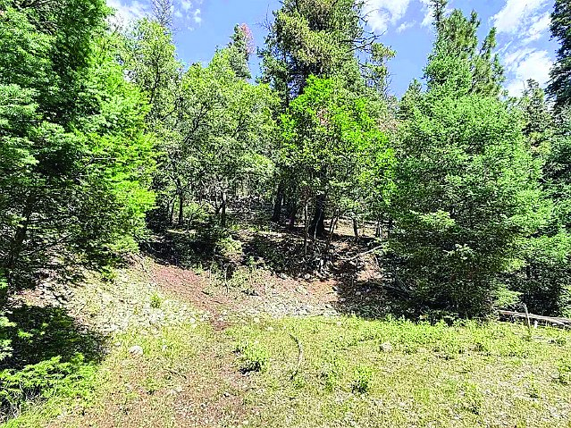
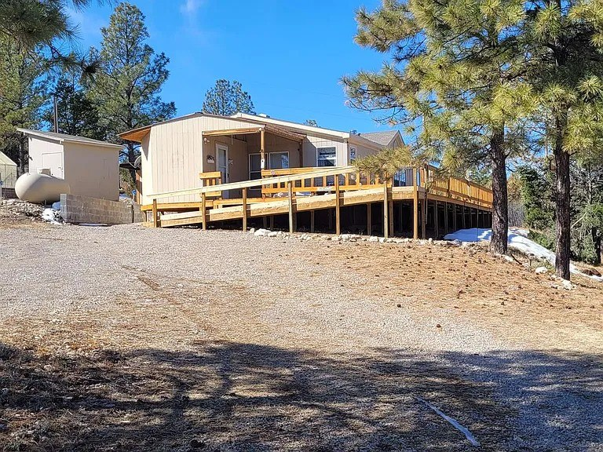
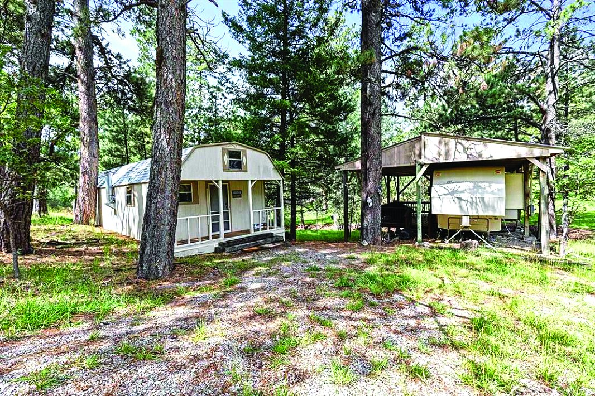
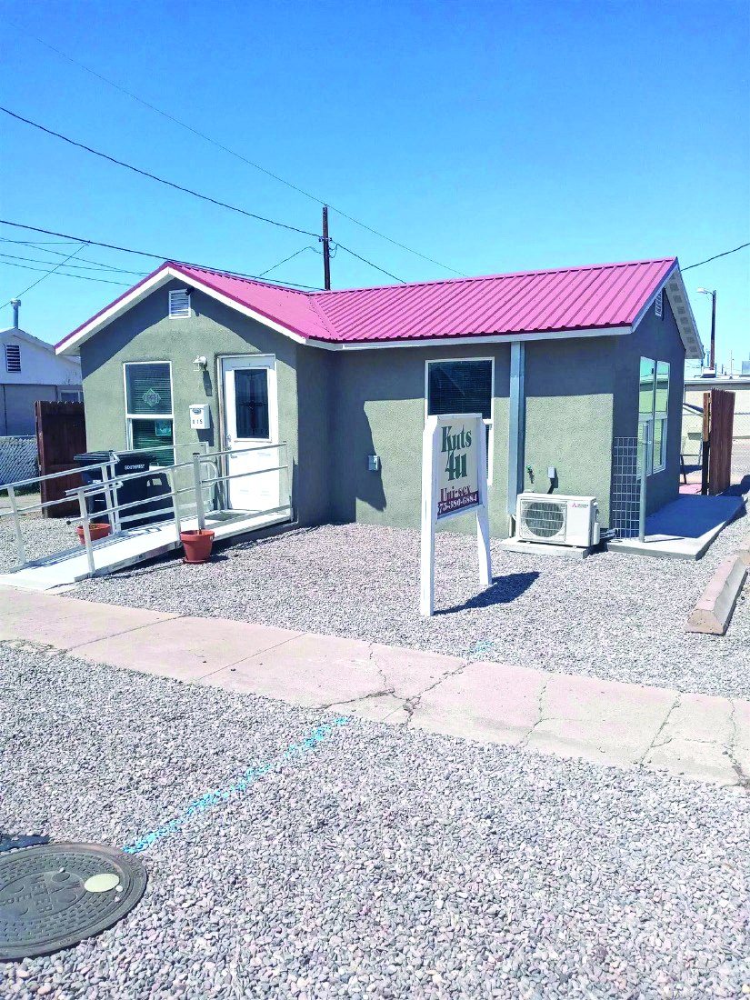
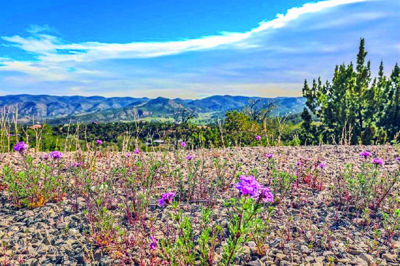
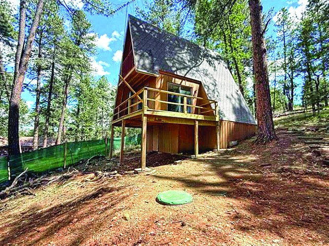
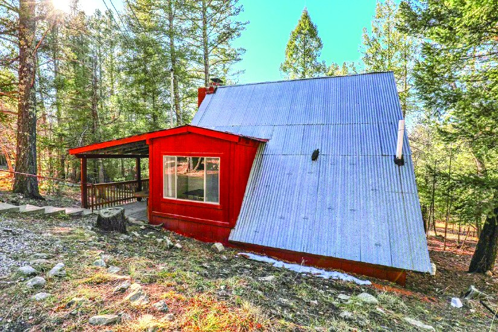

$145,000 9.91 Acre Property 9.91 acres MLS #173016
3 Bedroom Property
$156,900
| Price | $156,900 |
|---|---|
| Bedrooms | 3 |
| Bathrooms | 1.75 |
| MLS # | 172116 |
| Listed by | Real Estate |
| Print edition | October 2026 Otero County Edition, page 19 |
About this property
TIMBERON: Great home with huge front decks to enjoy forest views & wildlife. Large living room, 3 bdrms, 1¾ baths w/easy to clean tile floors throughout. Open kitchen w/pantry. Another add-on room next to kitchen w/lots of shelving & more storage. Property has been full time residence, but also great for part time or rental. Outside w/conex, storage building, workshop & garden area on an acre of land. Potable water tank inside shed next to workshop. Make a reasonable offer & own this mountain property.
Interested in this property?
Skip & Caryn Pridemore
Phone: 575-446-8125
Email: skip@tularosa.net
Real Estate
Please contact the listing agent or company directly. The Real Estate Roundup is a publisher and does not show or sell properties.
Listing details and photo reproduced from the October 2026 print edition of The Real Estate Roundup (page 19), as printed. Prices and availability can change after publication — confirm with the listing agent.
More Homes

$145,000 16 Springs Canyon Rd 1 bd MLS #172997
$169,000 Property in Alamogordo Alamogordo, New Mexico MLS #173233
$139,900 41 Sierra Blanca Dr MLS #172528
$125,000 17 Sunflower Trail 2 bd Cloudcroft, New Mexico MLS #172810
$188,900 1 Bedroom Property in Cloudcroft 1 bd · 1 ba Cloudcroft, New Mexico MLS #171900